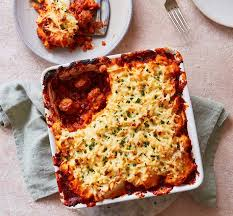

Cowboy 🤠 pie 🥧

What says comfort food better than sausages and baked beans in a pie topped with cheesy, buttery mashed potato? This is a guaranteed family favourite
Ingredients
- 2 tsp sunflower oil
- 1 onion, finely chopped
- 8 pork sausages, cut into bitesize pieces
- 2 garlic cloves, crushed or finely grated
- 2 tsp hot smoked paprika
- 2 x 410g cans baked beans
- 3 tbsp barbecue sauce
For the mashed potato
- 1 kg potatoes, peeled and roughly chopped
- 50g butter
- 4 tbsp milk
- 75g grated cheddar
- 2 tbsp chopped chives, to garnish, optional
Preparation
- First, make the mashed potato. Bring a large pan of salted water to the boil over a medium heat, then carefully tip in the chopped potatoes. Cook for 15-20 mins until tender. Drain, then tip back into the pan and leave to air-dry for a couple of minutes before mashing. Tip in the butter and milk, and stir through until combined. Set aside with the lid on to keep warm.
- Heat the oven to 200C/180C/gas 6. While the potatoes are cooking, heat the oil in a frying pan or saucepan over a medium heat and fry the onion for 6-8 mins until softened. Tip in the sausage pieces and fry for 4 mins until browned all over, then add the garlic and cook for 1 min before stirring in the smoked paprika and cooking for 1 min more. Pour in the beans and barbecue sauce and cook until just about to simmer before removing from the heat.
- Spoon the sausage and bean mixture into an ovenproof tin or dish (ours was 20x20cm), then spoon over the mashed potato and sprinkle the grated cheddar on top. Bake in the oven for 25-30 mins until bubbling round the edges and the cheese is golden. Remove from the oven and scatter over the chives, if using.
- Enjoy
Previous recipe
Return to Home Page